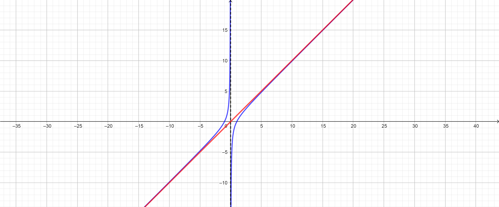

Di seguito gli argomenti svolti fino ad ora:
Il materiale è disponibile QUI
Data la funzione \[ f\left(x\right) = \dfrac{x^2 -1}{x} \]
Soluzione:
Il grafico della funzione è il seguente:
Osservate il comportamento delle seguenti funzioni per \(x \longrightarrow +\infty\).
Come potete vedere tutte tendono a \(+\infty\) per \(x \longrightarrow \infty\).
D'altra parte, la maniera in cui lo fanno è drasticamente diversa.
In particolare, notate come la prima delle funzioni rappresentate in grafico si approssima ad una retta per valori di \(x\) molto grandi.

L'approfondimento di questa situazione sarà oggetto della prossima lezione.
Sarà necessario quindi ricordare l'equazione della retta, che potete ripassare qui QUI.
⚠️ Farò domande sul materiale che vi ho linkato, mi raccomando di leggerlo con attenzione ⚠️